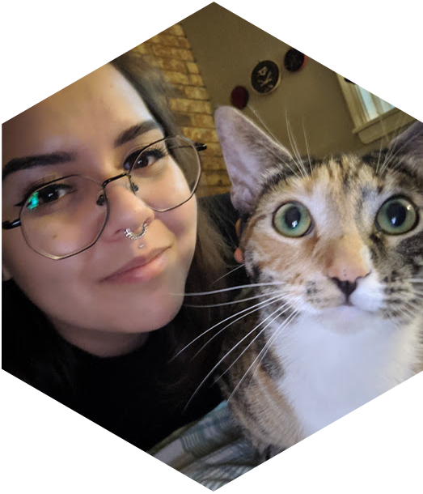

Hey, I'm April Walker.
I'm currently a graduate student and teaching assistant at the University of Arkansas pursuing my M.S in Statistics and Analytics. I'm a scientist at heart who has a passion for statistical inference, machine learning, and software development.
In addition to my teaching and coursework, I'm also involved in a research project with Dr. Linyin Cheng using Bayesian inference and extreme value theory to determine if urbanization is impacting the intensity and frequency of heat waves. You can find out more about that on my research page. I'll also go a bit more into depth about my previous astrophysics research studying x-ray binaries under Dr. Bret Lehmer. While I moved on to focus on research more relevant to my current coursework, I still try to stay involved in astronomy outreach through our on campus club S.P.A.C.E. Hogs. If you're student here interested in joining, checkout their facebook page or email us!
If you're enrolled in one of my classes, or otherwise interested in what I've taught at my university, feel free to jump over to my teaching page.
Lastly, if you're interested in machine learning, python, R, cats, or my general thought process feel free to check out my blog. Warning: there's a non-zero chance it'll be one Kaggle competition and 500 photos of my two cats...
Let's get in touch.
If you're stuck on a calculus assignment, interested in how I got involved in data science, or just want some top notch Fayetteville food recs - feel free to reach out to me. You can also shoot me a text or message me on Linkedin.